Ders 25
Geçtiğimiz birkaç haftada düzlemde çift entegral, düzlemde çizgi entegrali hesaplarını gördük. Artık bu dersten başlayarak benzer teknikleri göreceğiz, ama bu teknikleri 3 boyutlu uzayda göreceğiz. Yani uzayda üçlü entegral, uzayda akı (flux), uzayda iş (work), uzaklaşım (divergence), curl hesapları gibi. Bu yeni hesaplar aslında şimdiye kadar gördüklerimizin ek bir eksen eklenmiş hali, bazı farklılıklar var, ama kavramsal olarak aynı şeyler. O yüzden tavsiyem eğer düzlemde yapılan hesapları tam anlamadıysanız, geri dönüp bu konuları bir daha gözden geçirmeniz.
Üçlü Entegral (Triple Integral)
Eğer 3 boyutta size bir kütle verirsem,
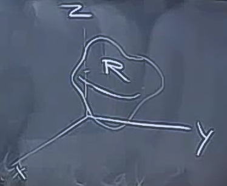
bu alan üzerinden üçlü entegral alabilirim,
$$ \int \int \int _R f \mathrm{d} V $$
$V$, hacim (volume) anlamında, yani $dV$ ile $R$ kütlesinin içindeki sonsuz ufaklıktaki hacimleri düşünüyoruz, ve onları topluyoruz. $dV$ büyüklüğü, $dx,dy,dz$ sonsuz ufaklıklara tekabül eder, tabii sıralama her türlü şekilde olabilir.
Eğer ikili olarak özyineli entegralleri nasıl hazırlayacağımızı biliyorsak, üçlü entegraller de buna benziyor. İki önemli kavram var, biri entegrasyon alanı, diğeri entegre edilen fonksiyon. Fonksiyon tabii ki entegrasyon hesabını tamamlarken önemli, ama daha zor olan adım entegrali hazırlayabilmek. O yüzden bugün hazırlık aşamasına odaklanacağım, kullanacağım fonksiyonlar basit seyler olacaklar.
Örnek
Bölge
$$z = x^2 + y^2$$
ve
$$z = 4 - y^2 - x^2$$
arasındaki bölge. Diyelim ki bu bölgenin sadece hacmini hesaplamak istiyorum, yani $f = 1$ yeterli.
$$ \int \int \int 1 \mathrm{d} V $$
Hatırlarsak alan için çift entegrallerde $1 \mathrm{d} A$ kullanmıştık, benzer numara. Bu arada, evet, bu hesabı çift entegral olarak hayal edebiliriz, fakat buradaki amacımız üçlü entegrali kurmak. Grafiği çizelim, ilk $z$,
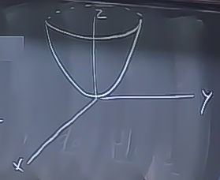
Bu bize en favori paraboloidimizi veriyor, yandan parabol gibi gözüküyor tabii, ve en alt noktası orijinde. İkinci $z$ de bir paraboloid, ama açık noktası aşağı bakıyor, $x=y=0$ bize $z=4$ verir [hoca $z=4$ ekseninde bir işaret atıyor, ve oradan başlayarak ters parabol çiziyor],
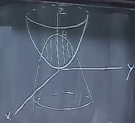
İlgilendiğimiz alan her iki paraboloidin kesiştiği bölge [resimde dikey sarı renkli işaretlendi]. Peki bu bölgenin en geniş yatay dış sınırı neye benzer?
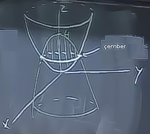
Bu sınır bir çember oluşturacaktır. Şimdi bu şeyin hacmini bulalım. Bu hesabı yapmak, basitleştirmek için pek çok yaklaşım kullanılabilir, üçlü entegrale bile gerek yok, fakat bunu özellikle yapmak istiyorum.
İlk önce bir entegrasyon sırası seçmek lazım. Ben ilk önce $z$ üzerinden entegre etmek istiyorum. Bunun sebebi verili bir $x,y$ için alt ve üst $z$ değerlerini çok çabuk bulabiliriz, $x,y$ düzleminde herhangi bir değer seçtiğimizi düşünelim, oradan yukarı dikey bir ışın fırlatıyoruz sanki ve bu işin kesişim alanına nereden giriyor nereden çıkıyor, bunu hemen bulabiliriz. Alt $z$ tabii ki birinci (çünkü kabın altı daha yakın) üst $z$ ikinci denklemden geliyor olacak. O zaman entegral
$$ \int \int \int .. \mathrm{d} z \mathrm{d} y \mathrm{d} x $$
şeklinde, sınırları belirlersek,
$$ \int \int \int\limits_{x^2+y^2}^{4-x^2-y^2} \mathrm{d} z \mathrm{d} y \mathrm{d} x $$
İç entegralin sınırları görüldüğü gibi hem 2. hem 3. değişkene bağlı. Şimdi orta ve dış entegral sınırları için hangi $x,y$ değişkenleriyle ilgileniyorum, ona karar vermem lazım. Bu değişkenler kesişim şeklinin $x,y$ düşen "gölgesi" içinde olan değerler olmalıdır. O zaman kesişim bölgesinin $x,y$'ye yansıtırsam, ortaya çıkan şekilde 2., 3. entegral sınırlarını bulabilirim.
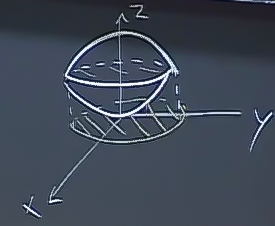
Üstteki şekilde sadece kesişim bölgesini çıkarttım, ve onun yansımasını resmettim, bu yansıma tabii ki bölgenin dış çeperi şeklinde olacak, ki bu şekil bir çember idi. Şimdi geri kalan entegral sınırları için bu yansıma içindeki tüm $x,y$ değerlerini kullanacağım. İşin bu kısmı aslında bir çift entegral hazırlığı yapmak gibi. Yardımcı olması amacıyla sadece bu yansıma bölgesini çekip çıkartabiliriz,
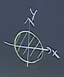
Şimdi soru şu: bu gölgenin büyüklüğünü nasıl buluruz. Bunun için iki paraboloidin nerede kesiştiğini bulmak lazım. Ya da şöyle düşünebiliriz, gölgeyi cebirsel olarak "ikinci paraboloidin yüzeyinin birincinin altında olduğu yer" olarak tanımlayabiliriz. Bu mantıklı çünkü gölge denen şey tanım itibariyle yüzeyin alt $x,y$ düzlemine en yakın olduğu noktalarla alakalı (gölge o bölgenin gölgesi).
$$ z_{alt} < z_{\textrm{üst}} $$
$$ x^2 + y^2 < 4 - x^2 -y^2 $$
$$ x^2 + y^2 < 2 $$
Bu bize $\sqrt{2}$ yarıçapına sahip bir disk verir. Sınırlara gelelim, o zaman orta entegral için $y$ sınırlarında, verili bir $x$ için $-\sqrt{2-x^2}$ ve $\sqrt{2-x^2}$, $x$ için $-\sqrt{2}$ ve $\sqrt{2}$.
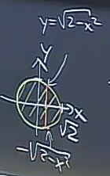
$$ \int\limits_{-\sqrt{2}}^{\sqrt{2}} \int\limits_{-\sqrt{2-x^2}}^{\sqrt{2-x^2}} \int\limits_{x^2+y^2}^{4-x^2-y^2} \mathrm{d} z \mathrm{d} y \mathrm{d} x $$
Bir nokta daha, eğer hesaba iç entegralden başlarsak,
$$ \int_{x^2+y^2}^{4-x^2-y^2} \mathrm{d} z = \big[ z \big]_{x^2+y^2}^{4-x^2-y^2} = 4-2x^2-2y^2 $$
Bu sonucu geri kalan ifadeye sokarsak, ortaya bayağı karmaşık bir ifade çıkacak,
$$ \int_{-\sqrt{2}}^{\sqrt{2}} \int_{-\sqrt{2-x^2}}^{\sqrt{2-x^2}} 4-2x^2-2y^2 \mathrm{d} y \mathrm{d} x $$
Aslında üstteki formüle hacim hesabına çift entegral olarak yaklaşsaydık ta erişecektik, kesişim objesinin üst ve alt sınırları arasındaki yüksekliği üzerinden bir çift entegral almak isteyecektik, ve yükseklik $4-2x^2-2y^2$ formülü değil midir? Evet. Fakat tabii ki üçlü entegral ile her türlü hacim hesabına genel olarak yaklaşabiliyoruz.
Karmaşıklık hakkında: belki daha iyi bir yaklaşım $x,y$ için kutupsal kordinat sistemine geçmek. $z$'yi olduğu gibi tutabiliriz, ondan memnunuz. O zaman entegralde $\mathrm{d} x$'i olduğu gibi tutarım, ama $\mathrm{d} y \mathrm{d} x$ yerine $r \mathrm{d} r \mathrm{d}\theta$ koyarım. Sınırlar da değişir, $x^2+y^2$ yerine $r^2$, vs. Üzerinden entegral alınan alan hala bir çember ve yarıçapı $\sqrt{2}$, bir çember için kutupsal kordinatta entegral kurmayı biliyoruz, hepsini bir araya koyarsak,
$$ \int_{0}^{2\pi} \int_{0}^{\sqrt{2}} \int_{r^2}^{4-r^2} \mathrm{d} z r \mathrm{d} r \mathrm{d}\theta $$
Bu entegrali hesaplamak çok daha kolay. Kutupsal kordinatların bir diğer ismi silindirsel kordinatlar (cylindrical coordinates).
Silindirsel kordinatların ana fikri şu, bir noktayı uzayda temsil etmek için $x,y,z$ yerine başka türlü üç sayı, $r,\theta,z$, kullanıyoruz. Bu sayılardan biri $z$, noktanın $x,y$ düzleminden ne kadar yüksekte olduğu. $r$ nokta $x,y$ düzlemine yansıtıldığı zaman yansıtılmış noktanın $z$ ekseninden ne kadar uzakta olduğu, $\theta$ ise noktanın $x$ ekseni ile oluşturduğu saat yönü tersindeki açısı.
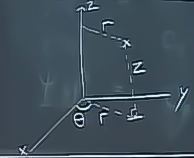
Silindirsel kordinata geçiş yapmak kutupsal forma geçişe benziyor,
$$ x = r\cos\theta $$
$$ y = r\sin\theta $$
Bu arada niye bu kordinat sistemine silindirsel deniyor? Diyelim ki size $r = a$ şeklinde bir denklem verdim, $a$ bir sabit. Mesela $a=1$ olsaydı bu iki boyutta yarıçapı 2 olan bir çember olacaktı. Ama üç boyutta tek bir denklem sadece bir çember değil bir yüzey verir. Bu yüzey ise $z$ ekseninden $a$ uzaklıktaki tüm noktaların kümesidir, bu küme de bir silindir oluşturacaktır.
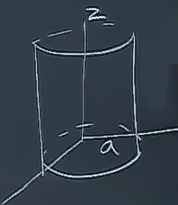
Benzer şekilde eğer bir $\theta=sabit$ formülü verilmiş olsaydı, o sabit açıda $z$ ekseninden dışarı doğru / ona dik bir düzlem düşünecektik, iki üstteki düzlemin bize ve yukarı aşağı doğru sonsuz devam eden halini hayal edebiliriz.
Devam edelim, hacim öğesi $\mathrm{d} x \mathrm{d} y \mathrm{d} z$ iken şimdi $r \mathrm{d} r \mathrm{d} \theta \mathrm{d} z$ haline geldi. Bunu zihnimizde canlandırmak için alttaki gibi ufak hacmi çizelim,
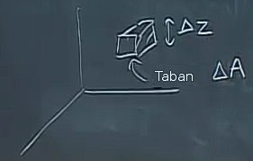
Bu ufak hacim $\Delta V = \Delta A \cdot \Delta z$ olur. Her şeyi sonsuz küçük hale getirince $\mathrm{d} V = \mathrm{d} A \cdot \mathrm{d} z$ elde ederiz, $x,y$ düzlemindeki alan için [üstte taban] hangi formül varsa onu kullanırız. Entegrasyon bağlamında hangisiyle başlarız? Çoğunlukla $z$ ile başlamak iyi oluyor çünkü çoğu zaman ilgilendiğimiz hacmin üst ve alt noktalarını biliyoruz. Ama bazı durumlarda $z$'yi sona bırakmak ta iyi olabilir, probleme göre değişir.
Uygulamalar
$\mathrm{d} V$'yi entegre ederek hacim hesaplayabildiğimizi gördük. Bir diğer uygulama bir nesnenin, objenin toplam kütlesini (mass) hesaplayabilmek. Mesela elimizde bu objenin yoğunluğu $\delta$ var, ki $\delta = \frac{\Delta m}{\Delta V}$'dir, ya da$\mathrm{d} m = \delta \cdot \mathrm{d} V$ diyelim. Burada gerçek bir fiziksel yoğunluktan bahsediyoruz, $gram / m^3$ biriminde - o zaman
$$ \textrm{Kütle} = \iiint_R \delta \mathrm{d} V $$
Eğer yoğunluk 1'e eşit ise, bu hesap tabii ki sadece yine hacmi hesaplar.
Bu tür hesabın daha önce bir düzlemde yaptığımız klasik işlemler, fonksiyon ortalaması, kütle merkezi, dönme direnci (moment of inertia) hesabı gibi şeyler için kullanılabilecek olması herhalde çoğumuza şaşırtıcı gelmez. Mesela bir $R$ bölgesinde fonksiyon $f(x,y,z)$'nin ortalama değeri $\bar{f}$
$$ \bar{f} = \frac{1}{Hacim(R)} \iiint_R f \mathrm{d} V $$
ile hesaplanır. Eğer fonksiyon ortalamasını yoğunluk üzerinden hesaplamak istersek (yani ağırlıklı ortalama)
$$ \frac{1}{\textrm{Kütle}(R)} \iiint_R f \delta \mathrm{d} V $$
Eğer fonksiyon işin içinde olmasaydı, sadece yoğunluk üzerinden ağırlıklı ortalamanın örneği için, katı bir cismi düşünelim, bildiğimiz gibi katı cisimlerde bir ağırlık merkezi (center of mass) vardır, tamamen yuvarlak bir tepsiyi düşünelim, boş iken ağırlık merkezi tam ortada, ama üzerinde farklı yerlerde farklı objeler olunca (farklı yerlerdeki yoğunluklar değişik) merkez daha solda ya da sağda olabilir. Bu merkez $\bar{x},\bar{y},\bar{z}$ olsun, hesabı için, mesela $\bar{x}$,
$$ \bar{x} = \frac{1}{\textrm{Kütle}(R)} \iiint_R x \delta \mathrm{d} V $$
$\bar{y},\bar{z}$ benzer şekillerde.
Bu arada eğer katı cismin belli bir simetrisi varsa onun sayesinde üstteki tüm hesapları yapmamız gerekmeyebilir. Önce gördüğümüz iki paraboloid kesişimindeki bölgeyi hatırlarsak, kütle merkezinin $z$ ekseni üzerinde olacağı gayet bariz, bu durumda $\bar{x},\bar{y}$ hesabına gerek yok, çünkü ikisi de sıfır. $\bar{z}$ de simetri üzerinden bulunabilir, bunu size ödev olarak veriyorum.
Dönme direnci: kavramsal olarak dönme direnci üç boyutta iki boyutta olduğundan daha rahat anlaşılır, bu hesabın şimdiye kadar gördüğümüz pek çok çeşidi şimdi burada bir araya gelecek. Bir eksen bazında dönme direnci
$$ \iiint_R (\textrm{eksene olan uzaklık})^2 \delta \mathrm{d} V $$
Orijin merkezli bir objeyi hayal edelim, şekli önemli değil, bu objeyi eksen bazlı döndürmek için üç olasılık var, $x,y,z$. Daha önce iki boyutta döndürme yaptığımız zaman aslında $z$ etrafında döndürme yapmış oluyorduk, şimdi üç boyutta bu daha açık hale geldi.
Örnek olarak $z$ ekseni etrafındaki dönme direncini yapalım. $z$ eksenine olan uzaklık $r$, onun karesi $r^2$,
$$ I_z = \iiint_R r^2 \delta \mathrm{d} V $$
Eğer silindirsel kordinat kullammak istemeseydik, $r^2 = x^2 + y^2$ olduğuna göre,
$$ = \iiint_R x^2 + y^2 \delta \mathrm{d} V $$
$x$ ekseni etrafında dönme direnci
$$ I_x = \iiint_R y^2 + z^2 \delta \mathrm{d} V $$
Aynı şekilde
$$ I_y = \iiint_R x^2 + z^2 \delta \mathrm{d} V $$
$x,y$ eksenlerine olan uzaklığın üstteki olduğunu, mesela $y$ için $x^2+z^2$, cismi zihnimize evirip çevirerek anlayabiliriz.
Eğer üstteki formülleri $x,y$ düzleminde duran ama hiç $z$'si olmayan dümdüz objeler için hayal edersek, geri kalanlar daha önce gördüğümüz eski formüllerimiz olacak.
Örnek
$z=ar$ ve $z=b$ katı cismi için dönme direnci hesaplayalım. $z=ar$ yükseklik $z$ eksenine olan uzaklığa oranlıdır demektir, yani orijinden başlarsam yukarı çıktıkça bu yüksekliğe oranlı şekilde $z$'den uzaklaşıyorum. Bu durum yukarı nasıl çıkarsam çıkayım oluyor, ve o zaman ortaya bir koni (cone) şekli çıkar. $z=b$ demek koni belli bir $z$'ye kadar çıkıyor demek, örnekte $b$. Resim,
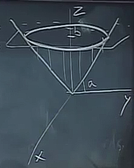
$z$ ekseni etrafındaki dönme direnci nedir? Belki bu objeyi alıp fırıldak gibi $z$ etrafında döndüreceğiz, ve bu işin ne kadar zor olacağını merak ediyoruz. Silindirsel kordinat kullanalım, yoğunluk her yerde aynı, ve 1 olsun, $\delta = 1$.
$$ I_z = \iiint r^2 r \mathrm{d} r \mathrm{d} \theta \mathrm{d} z $$
$\mathrm{d} z$ önce olacak şekilde de yapabilirdim, üstteki hali bir kez görelim, sonra $\mathrm{d} z$ önce ile karşılaştırabiliriz, hangisini daha çok sevdiğimize o zaman karar veririz. Eğer üstteki sırada entegral alırsak, iç ve orta entegral için $z$'nin değerini sabitlemiş oluyoruz. Bu her sabitlenmiş $z$ için cismi yatay düzleme paralel yönlerde kesmiş gibi oluyoruz, ve bu kesitlerde ne olduğuna bakıyoruz. Bu neye benzer? Mesela herhangi bir $z$'de kesite bakarsak,
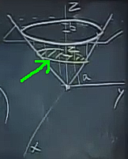
bir çember elde ettiğimizi görüyoruz. Çemberin yarıçapı nedir? $r = z/a$. O zaman üçlü entegraldeki iç ve orta entegralde üstteki yarıçapı $z/a$ olan her kesit çemberi üzerinden bir çift entegral hesaplarız,
$$ I_z = \int \int_{0}^{2\pi} \int_{0}^{z/a} r^2 r \mathrm{d} r \mathrm{d} \theta \mathrm{d} z $$
Dış değişken $z$ için ne yapacağız? Kendimize soralım, alttan yukarı doğru ilk kesit (kesitleri farklı $z$'ler tanımlıyor sonuçta) hangisi, son kesit hangisi? En alt sıfır, en üst $b$. Yani,
$$ = \int_{0}^{b} \int_{0}^{2\pi} \int_{0}^{z/a} r^2 r \mathrm{d} r \mathrm{d} \theta \mathrm{d} z $$
$$ = \frac{\pi b^5}{10 a^4}$$
Bu kadar. $z$ önce gelecek şekilde olan entegralin hesabı size ödev olsun.
Örnek
Orijinde merkezlenmiş birim top içinde olan $z > 1-y$ bölgesinin üçlü entegrali nedir?
Birim topun formülü $x^2 + y^2 + z^2 < 1$. Bölge $z > 1-y$ formülünde hiç $x$ değişkeni yok, o zaman bölge $x$ eksenine paralel olmalı. Orijinde yüksekliği 1, ve oradan 1 eğim ile aşağı iniyor. Ortaya alttaki gibi bir durum çıkar,
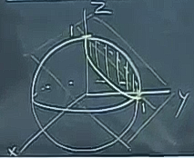
Bir düzlem küreyi kesiyor, o kesit üzerinde bir çember oluşur (düzlem küreyi nerede keserse kessin ortaya bir çember çıkar), kesişimin üst ve alt noktaları vardır.
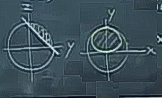
Üstte kesişim bölgesine tahtanın içine doğru $z,y$ eksenleri bazlı bakıyoruz (üst sol), bir de eğer bölgeyi $y,x$ eksenine yansıtsak ne çıkar onu görüyoruz (üst sağ resim). Eğer üçlü entegrali kuruyor olsak ve diyelim ki biz kaka insanlarız ve dikdörtgensel kordinat sistemi kullanıyoruz [öğrenciler gülüyor], alt yüzey üst soldaki resimdeki yatık düzlem.
İç entegral için alt sınır $1-y$ olur. Üst sınır küre üzerinde $z = \sqrt{1-x^2-y^2}$. $x,y$ için sınırları bulmak için üst sağ resimdeki şekli anlamamız gerekiyor, bu nasıl bir şekil? Orada hangi $x,y$ değerleri için düzlem kürenin altında? Yani
$$ 1-y < \sqrt{1-x^2-y^2} $$
değerlerini arıyoruz. Bu denklemi manipüle ederek daha basit bir sonuç çıkartmak istiyoruz. Bunun yapmanın tek yolu herhalde iki tarafın karesini almak.
$$ (1-y)^2 < 1-x^2-y^2 $$
Bir sürü cebirsel takladan sonra elimize bayağı çetrefil bir formül geçecek, ama bu formülü verili $x$ için hangi $y$ sınırları gelir, vs. irdelemesi için kullanabiliriz, bunlar da entegralimızın sınırlarını oluştururlar. Sonuçlar altta,
$$ \int_{0}^{1} \int_{-\sqrt{2y-2y^2}}^{\sqrt{2y-2y^2}} \int_{1-y}^{\sqrt{1-x^2-y^2}} \mathrm{d} z \mathrm{d} x \mathrm{d} y $$
Tabii ki sadece hacim hesabı için üstteki yöntemi kullamazdık, simetri kullanarak objeyi çevirip o kesişim bölgesinin $z$ ekseni merkezli olmasını sağlardık, böylece entegral kurma işlemini basitleştirmiş olurduk. Ama entegre edilen fonksiyonun ne olduğuna bağlı olarak bu her zaman mümkün olmayabiliyor.
Yukarı